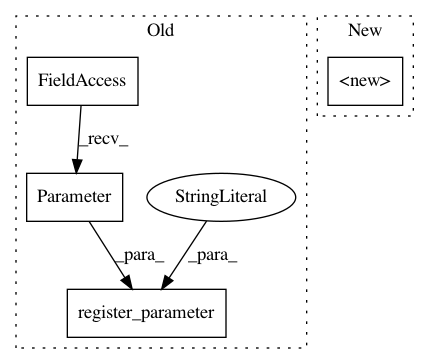

2185f24dda7b33194d4240b2a6301230ce1cd7f5,gpytorch/kernels/index_kernel.py,IndexKernel,__init__,#IndexKernel#Any#Any#Any#,44
Before Change
raise RuntimeError("Cannot create a task covariance matrix larger than the number of tasks")
super().__init__(**kwargs)
self.register_parameter(
name="covar_factor", parameter=torch.nn.Parameter(torch.randn(*self.batch_shape, num_tasks, rank))
)
self.register_parameter(name="raw_var", parameter=torch.nn.Parameter(torch.randn(*self.batch_shape, num_tasks)))
if prior is not None:
self.register_prior("IndexKernelPrior", prior, self._eval_covar_matrix)
After Change
def var(self):
return self.var_constraint.transform(self.raw_var)
@var.setter
def var(self, value):
self._set_var(value)
def _set_var(self, value):
self.initialize(raw_var=self.var_constraint.inverse_transform(value))
def _eval_covar_matrix(self):
In pattern: SUPERPATTERN
Frequency: 3
Non-data size: 4
Instances
Project Name: cornellius-gp/gpytorch
Commit Name: 2185f24dda7b33194d4240b2a6301230ce1cd7f5
Time: 2019-04-02
Author: jake.gardner@uber.com
File Name: gpytorch/kernels/index_kernel.py
Class Name: IndexKernel
Method Name: __init__
Project Name: cornellius-gp/gpytorch
Commit Name: 529456c17464022d42e1c343bec52f2d4d77e79b
Time: 2018-10-29
Author: balandat@fb.com
File Name: gpytorch/likelihoods/multitask_gaussian_likelihood.py
Class Name: HomoskedasticMultitaskGaussianLikelihood
Method Name: __init__
Project Name: cornellius-gp/gpytorch
Commit Name: 2185f24dda7b33194d4240b2a6301230ce1cd7f5
Time: 2019-04-02
Author: jake.gardner@uber.com
File Name: gpytorch/likelihoods/multitask_gaussian_likelihood.py
Class Name: MultitaskGaussianLikelihoodKronecker
Method Name: __init__